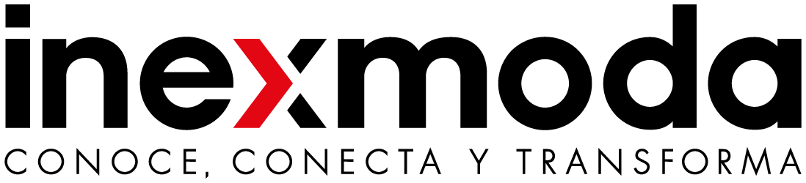

Diseño que no se ve reciclado
Acabados de producto de diseño, con una historia de origen que tus clientes pueden contar.

SLOW convierte residuos textiles en revestimientos, mobiliario y objetos de diseño, producidos en Colombia y con trazabilidad en cada pieza. Materialidad que se ve bien y que tu cliente puede contar.
Respondemos por WhatsApp. Sin compromiso de compra para pedir muestras o una propuesta.



Acabados de producto de diseño, con una historia de origen que tus clientes pueden contar.
Pasaporte digital de producto: cada pieza conecta con su origen, útil para tu memoria de proyecto.
Textil reciclado en cada pieza: un argumento sólido para proyectos que buscan certificaciones como LEED.
Menor peso que una pieza de concreto regular, con la durabilidad que exige un proyecto.
Trabajamos con arquitectos, interioristas, marcas y empresas que necesitan revestimientos, mobiliario y piezas en cantidad.
Piezas para muros en retail, hospitality, residencial y corporativo.
Pedir muestra de revestimiento
Mesas y piezas con carácter para espacios comerciales y residenciales.
Cotizar mobiliario
Pequeñas piezas que cuentan la misma historia. Ideales para styling y regalos corporativos.
Cotizar objetosDesarrollamos materiales, mobiliario, revestimientos y objetos según tus planos, cantidades y tiempos. También colecciones y regalos corporativos para marcas.
Tu cliente no solo recibe un material: recibe la historia verificable de dónde viene. Una herramienta de narrativa y de trazabilidad para presentaciones, memorias de proyecto y reportes de sostenibilidad.
Ver el pasaporte digitalCuéntanos tu proyecto y recibe muestras para ver y tocar el material en tu paleta.
Acompañamos la especificación técnica: acabados, formatos y desempeño según el uso.
Fabricamos según tus especificaciones, cantidades y tiempos de obra.
Cada pieza llega con su pasaporte digital de producto.
Marcas como SURA, Inexmoda y Miro Seguridad ya han trabajado con SLOW. Cuéntanos tu caso y te mostramos qué línea encaja mejor con tu proyecto.
Poder tocar la muestra antes de decidir nos dio la seguridad para especificar el material en el proyecto.
Al cliente le encantó que el material tuviera una historia de origen para contar. Cambia la conversación del proyecto.
La respuesta por WhatsApp fue ágil y la propuesta llegó ordenada, con lo que necesitábamos para presentarla.
Sí. Producimos para proyectos según tus especificaciones, cantidades y tiempos, y desarrollamos piezas a la medida para retail, residencial, hospitality y espacios corporativos.
Sí. El proceso empieza con muestras físicas y, cuando el proyecto lo requiere, un prototipo para validar antes de producir.
Sí. Te asesoramos en acabados, formatos y desempeño según el uso que tendrá la pieza en tu proyecto.
Cada pieza cuenta con un pasaporte digital de producto que conecta con su origen. Es útil para tus presentaciones y para la documentación de proyectos que buscan certificaciones como LEED.
Los tiempos dependen de las especificaciones, el acabado y las cantidades. Te compartimos un cronograma junto con la propuesta, y respondemos tu solicitud por WhatsApp.
Sí. Producimos en Medellín y atendemos proyectos en toda Colombia.
Llena cuatro campos. Se abre WhatsApp con tu solicitud lista para enviar y te respondemos con los siguientes pasos.